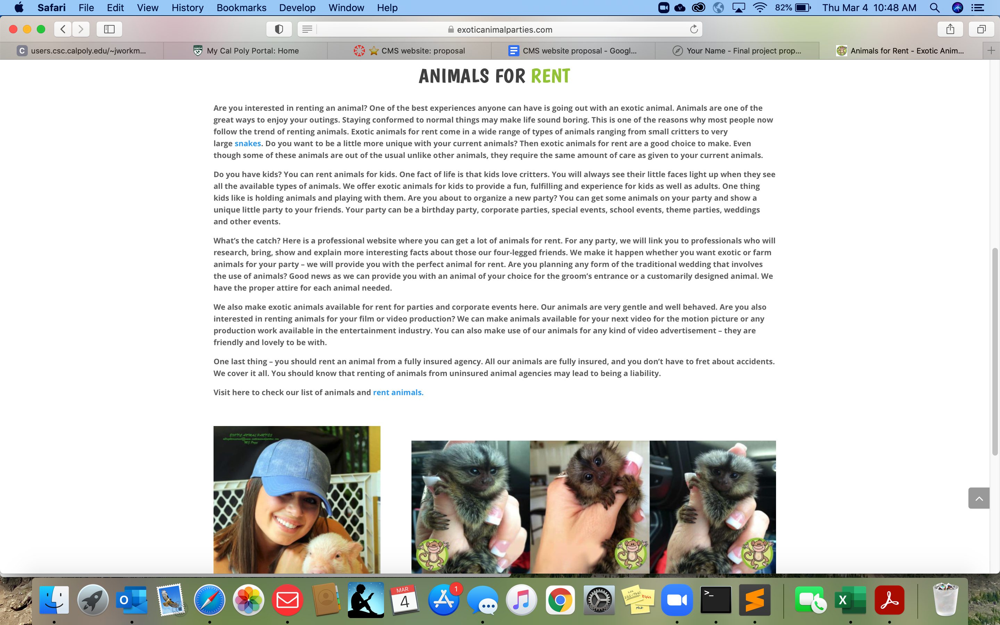
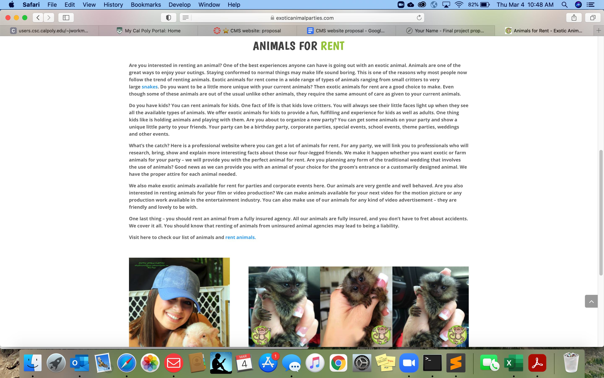
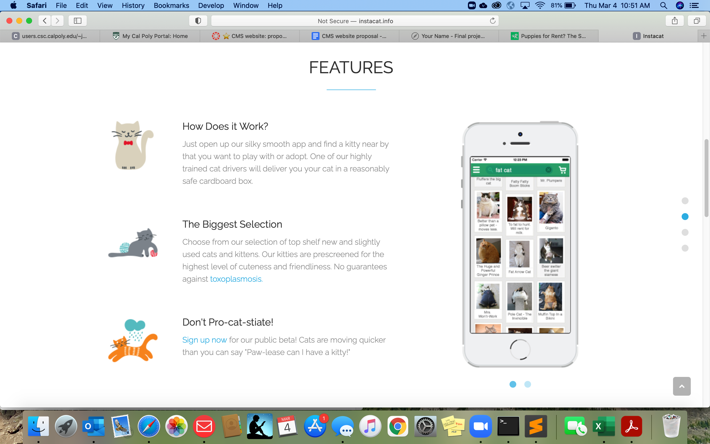
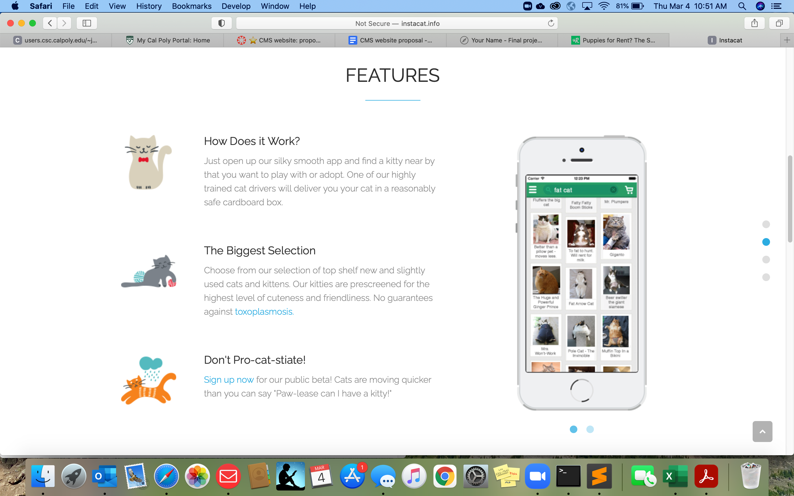

Final project proposal - Jennifer Craddock
Introduction
PAWS (People avoiding work and school) offline
PAWS offline is a partner company that works with dog shelters to rent out dogs to college students and stressed adults for a day. It's designed to be a "temporary ESA" in that people can pay an hourly rate or pay for the day, the shelter pairs them with a dog that fits what the student or adult needs, and then the dog becomes his or her responsibility for the day.
Target audience
PAWS offline targets stressed college students and working adults who desperately need to unplug, let loose and spend time with a furry animal to help relieve stress and release endorphins.
Aside from relieving stress, I'm hoping to also help shelters in exposing these dogs more to the outside world and show them what a loving home is like in the chance that some of the dogs have never known one. ALong with this, I would hope that the majority of proceeds would go towards the shelter that is partnering with the program, so essentially where the dog is rented from, that's the shelter that gets the proceeds from that dog.
Comparative analysis
Exotic Animal Parties
 

Brave Pup


Insta Cat
 

Website content
[A group of 'smiling' dogs are sitting on the grass looking at the camera]
How it works
So, you want to rent a pup...Great! We've got a vast selection of different breeds, ages, and of course, personalities! To start, please fill out our short application form that can be found here : [appliation]
Once your application is approved (which can take approximately 48 hours) you will be notified of our decision and will then have the opportunity to come in and reserve your pup! Please be mindful that our dogs are in popular demand, so if you would like to rent a dog that seems to be quite popular, we recommend planning in advance!
The Day has come: You get your pup!
We ask that you please arrive 15 minutes before your scheduled pickup time to allow us to have enough time to get you all the goods for your pup, including food, leashes, and doggie bags. The amount of supplies you get is determined by how long you've designated to rent your pup for, being full-day rentals getting more alloted food than partial day, etc. Along with this, please ensure that you have a blanket, towel etc. for your pup to ride in the car, as some of our dogs are prone to shedding! Lastly, please understand that our dogs are live animals, so we reserve the right to switch reservations around at the last minute if our pup is feeling under the weather or has been acting up lately, as the safety of our customers and our pups is our top priority!
When your pup time has come to an end...
Once your pup reservation time has come to an end, we ask that you bring your pup back no later than within 30 minutes of your scheduled end time, whether that being 30 minutes before or after the actual time. We will ask you to return all of the supplies that were not used, including all leashes, and any food/doggie bags that were not used so that we may repurpose them for the next rental! Lastly, we will ask that you fill out a brief survey describing any issues that you had with your pup, or any feedback that you believe would constructively improve our business.
If you wish to extend your time, please call us at our main office number (pictured on the home page) to request an extension, but please note that we do not always have extension availability! Similarly, if you must cut your time shorter than you initially expected, you may bring your pup back and we will refund you for the hours that you did not get to spend with your pup
Lastly, if you aren't getting good vibes with your pup when your time begins, you may bring the pup back and get a different one, pending we have another pup available that better fits your needs. However, our detailed screening process helps us to pair you with a pup as best we can to ensure that you and your pup are a perfect match, so we hope that you do not run into this setback!
So, how much does it cost?
In order to rent our pups, we ask that you pay our hourly or daily rates of operation which vary based on the dog that you're requesting. All of our proceeds go directly to the care of our pups and keeping our shelter doors open, which include buying dog food, dog toys, new leashes, bathing products etc. We ask that you leave your credit card on file for the day so we reserve the right to increase charges if you fail to comply with our disclosures (see corresponding tab)
Daily/Partial/Hourly Rates
Daily Rates run for an entire daylight day, so from 8am-7pm year-round
Partial Rates run for 3 or 6 hour increments anytime between 8am - 7pm year-round
Large dogs: (Breeds include golden retriever, german shepherd, labrador retriever etc.)
$115.00/day, $65.00/partial, $35.00/hour
Medium dogs: (breeds include Beagles, Austrailian sheperds, and cocker spaniels)
$85.00/day, $45.00/partial, $25.00/hour
Small dogs: (Breeds include corgies, chihuahuas, and any miniature breed
$65.00/day, $25.00/partial, $15.00/hour
[A group of friends smiling around a medium sized dog in the sunshine]
Meet our pups!
So, what good would a pup rental company be if we didn't have pups to rent?? Below you'll find all of our pups and a short bio about them, including their name, breed, age, and what activites/personality traits we suggest you consider if you wish to rent that particular dog.
**Will be a grid layout with images and short bios about each dog, as well as what size dog they're considered to be
["FIDO", a 3-year-old australian shepherd who is very active! He loves the great outdoors, is great with kids, and gives great cuddles if necessary]
What you should know before renting a pup
Our top priority is ensuring the safety and well-being of our customers and our pups. Of course, our dogs are live animals, and they don't always behave the way we want them to, so please be aware that though our dogs are well-trained and well-behaved, they are still animals and can still behave the way they want to sometimes. We disclose that we are not responsible for any damage caused to property by your chosen rental dog, and we are not responsible for any injury that may be sustained when renting a dog.
We reserve the right to refuse service to anyone, at any time, for any reason. If you rent our pup and return him or her with scratches, bruises, or other sustained injuries, you will be subject to potential animal cruelty charges, should they be necessary. We take good care of our dogs, and we ask that if you are choosing to partake in our services, that you do too. Our animals deserve to be loved all of the time, and we will press charges if the animal is returned in a harmed or unwell state. Lastly, please REFRAIN from feeding our dogs anything that is present on the "what to avoid with your pup" card in which it details all foods that should be kept out of reach of our dogs. Of course, we ask that you stick with the food/treats that are provided to you, but understand that those puppy-dog eyes work all too well sometimes.
All of our dogs are microchipped. We have detailed locations of our dogs at all times and reserve the right to press charges should you attempt to take our dogs across city lines unless indictated at the time of your application. Please note, if you wish to take our dogs across city lines it is an additional $25.00 security charge that will be returned at the time of returning your pup. Lastly, if you do not return your pup by the end of you alotted time and you do not request an extension, an additional $25/every 30 minutes you are late will be charged to your credit card.
COVID-19 DISCLOSURE: We are fully operational during all business operational tiers of the government shutdown, but will go into immediate closure should a stay-at-home be in effect at any time. We ask that you present a negative COVID-19 test witin 3 days of your scheduled rental day, and our dogs are bathed each night after they have been rented to ensure minimal contact spread abilities.
Our dogs are NOT registed Emotional Support Animals (ESAs), service dogs, or therapy dogs. Our dogs have no clearance to enter buildings or businesses that do not already allow pets to enter the premises, and we reserve the right to bill you should we be notified that our dogs were brought onto premises where they are not allowed.
[Golden retirever dog jumping to reach a frisbee mid-air in a grassy field.]